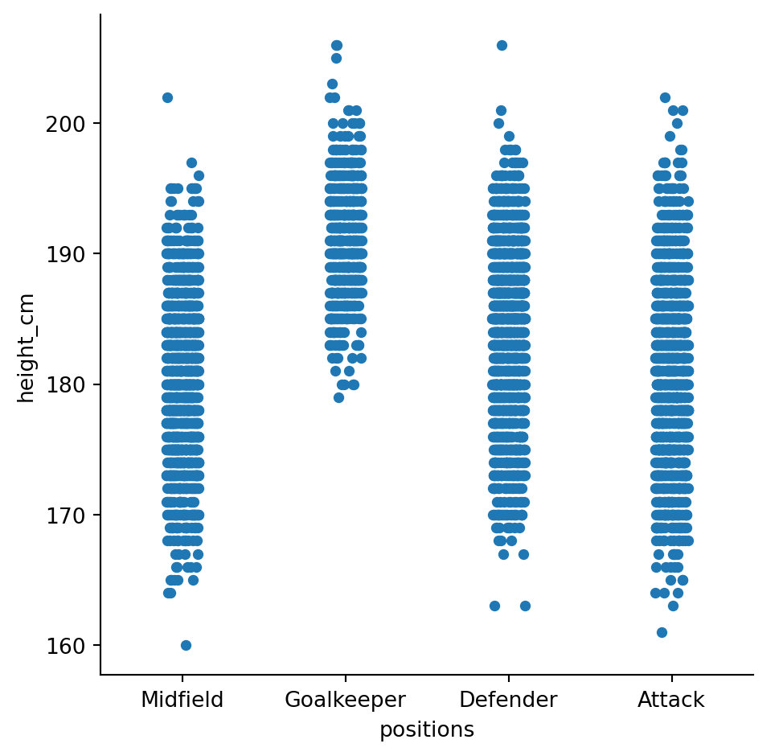
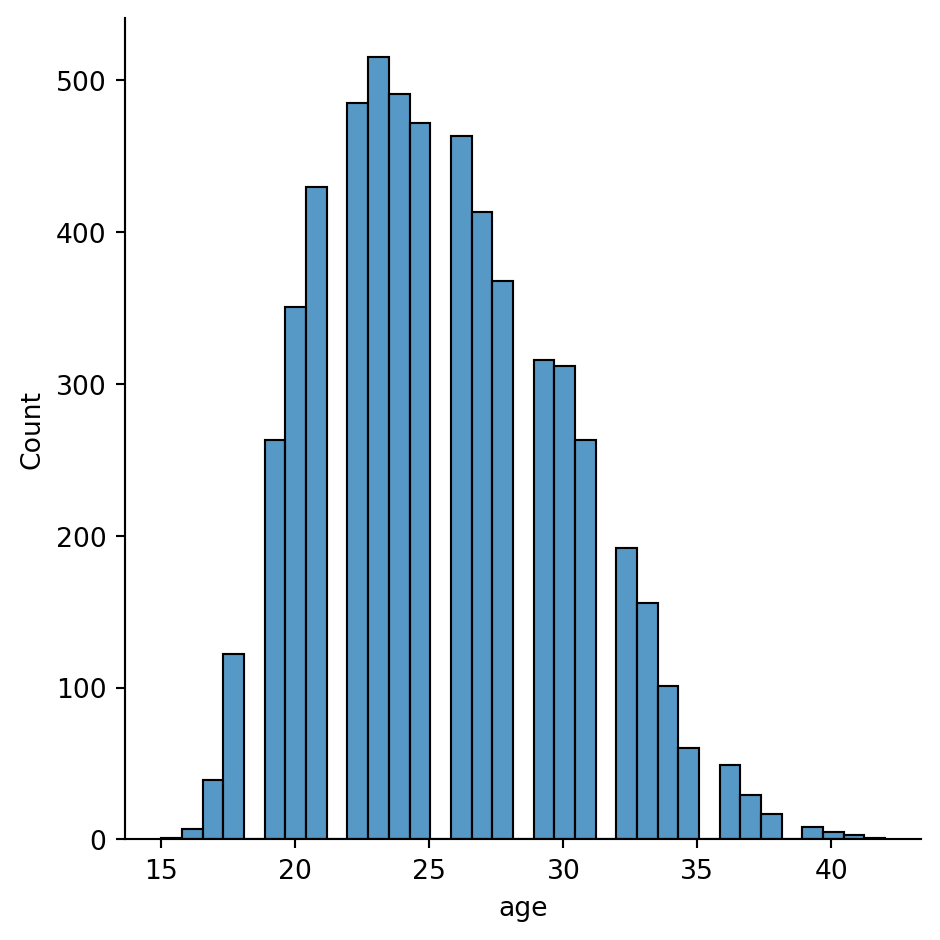
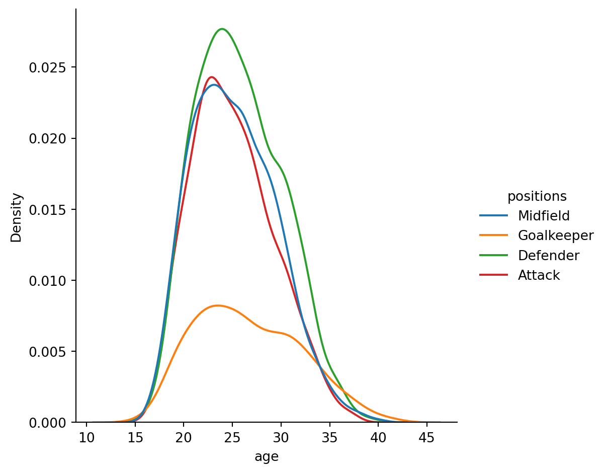
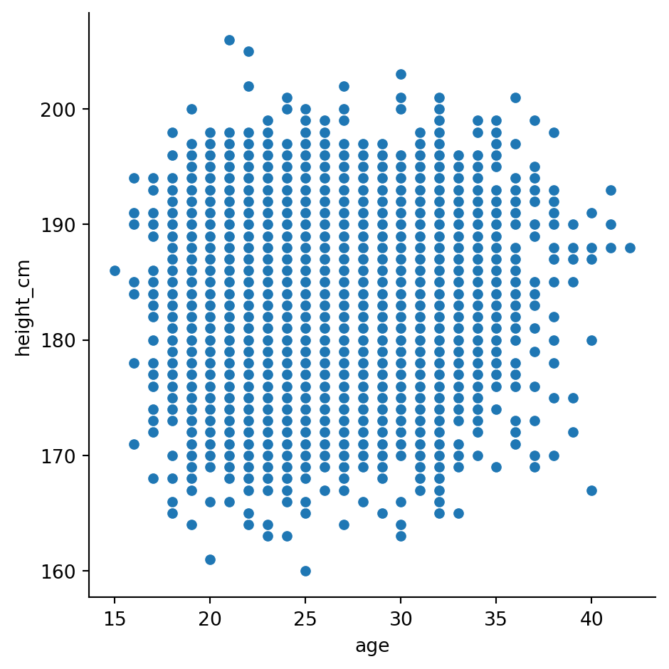
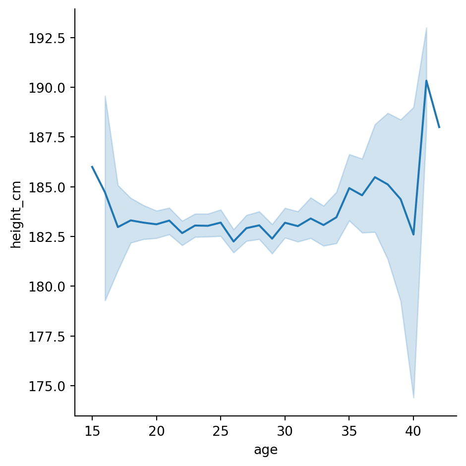
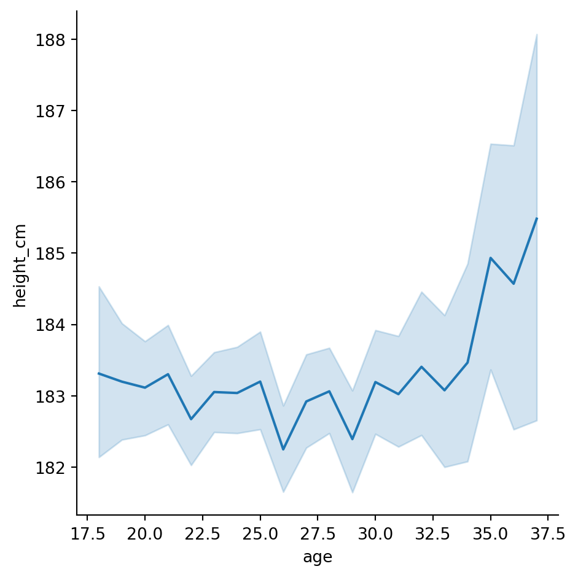
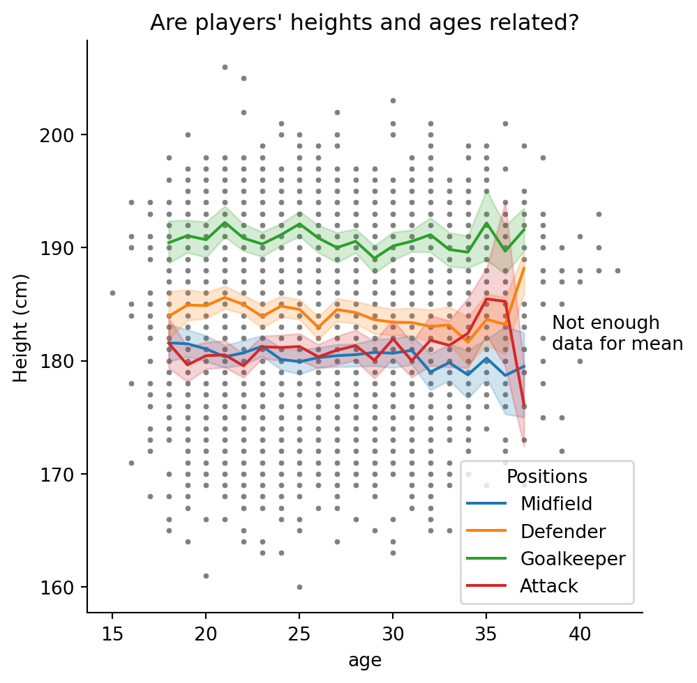

import pandas as pd
import matplotlib.pyplot as plt
import seaborn as snsPython Training (3 of 4): Introductory Data Visualisation
TipUpcoming workshop(s) available!
The next workshop is on Fri Mar 13 at 09:30 AM.
Book in to the next offering now.
Alternatively, check our calendar for future events.
In this third workshop we will cover
- Simple visualisations with seaborn
- Making modifications with matplotlib
Setting up
Spyder version
Before we begin, please check which version of Spyder you’re using (you can see this in the Anaconda Navigator, or in Help > About Spyder). If it’s less than 6, you should update Spyder before continuing. However, if you’re in a workshop, this will take too long - instead, use the following workaround if your plots don’t work:
plt.show()Modules and data
We’ll need three modules today:
For this workshop we’ll be working from the “Players2024.csv” dataset. If you don’t have it yet,
- Download the dataset.
- Create a folder in in the same location as your script called “data”.
- Save the dataset there.
We should then bring it in with pandas:
df = pd.read_csv("data/Players2024.csv")Take a quick peak at the dataset to remind yourself
print(df) name birth_date height_cm positions nationality \
0 James Milner 1986-01-04 175.0 Midfield England
1 Anastasios Tsokanis 1991-05-02 176.0 Midfield Greece
2 Jonas Hofmann 1992-07-14 176.0 Midfield Germany
3 Pepe Reina 1982-08-31 188.0 Goalkeeper Spain
4 Lionel Carole 1991-04-12 180.0 Defender France
... ... ... ... ... ...
5930 Oleksandr Pshenychnyuk 2006-05-01 180.0 Midfield Ukraine
5931 Alex Marques 2005-10-23 186.0 Defender Portugal
5932 Tomás Silva 2006-05-25 175.0 Defender Portugal
5933 Fábio Sambú 2007-09-06 180.0 Attack Portugal
5934 Hakim Sulemana 2005-02-19 164.0 Attack Ghana
age club
0 38 Brighton and Hove Albion Football Club
1 33 Volou Neos Podosferikos Syllogos
2 32 Bayer 04 Leverkusen Fußball
3 42 Calcio Como
4 33 Kayserispor Kulübü
... ... ...
5930 18 ZAO FK Chornomorets Odessa
5931 18 Boavista Futebol Clube
5932 18 Boavista Futebol Clube
5933 17 Boavista Futebol Clube
5934 19 Randers Fodbold Club
[5935 rows x 7 columns]Seaborn for simple visualisations
To begin our visualisations, we’ll use the package seaborn, which allows you to quickly whip up decent graphs.
Seaborn has three plotting functions
sns.catplot(...) # for categorical plotting, e.g. bar plots, box plots etc.
sns.relplot(...) # for relational plotting, e.g. line plots, scatter plots
sns.displot(...) # for distributions, e.g. histogramsWe’ll begin with the first.
It’s called “seaborn” as a reference to fictional character Sam Seaborn, whose initials are “sns”.
Categorical plots
Categorical plots are produced with seaborn’s sns.catplot() function. There are two key pieces of information to pass:
- The data
- The variables
Let’s see if there’s a relationship between the players’ heights and positions, by placing their positions on the \(x\) axis and heights on the \(y\).
sns.catplot(data = df, x = "positions", y = "height_cm")Our first graph! This is called a swarm plot; it’s like a scatter plot for categorical variables.
WarningIf your plots don’t appear…
…AND you don’t have an error, then you might have a Spyder version with a bug.
The simplest workaround is to run plt.show() every time you make a plot. If you have time, you should update Spyder.
It’s already revealed two things to us about the data:
- There are some incorrect heights - nobody is shorter than 25cm!
- Someone’s position is “missing”
Let’s get rid of these with the data analysis techniques from last session
# Remove missing position
df = df[df["positions"] != "Missing"]
# Ensure reasonable heights
df = df[df["height_cm"] > 100]Run the plot again, it’s more reasonable now
sns.catplot(data = df, x = "positions", y = "height_cm")
Bar plots
Swarm plots are interesting but not standard. You can change the plot type with the kind parameter
sns.catplot(data = df, x = "positions", y = "height_cm", kind = "bar")Many aspects of your plot can be adjusted by sending in additional parameters and is where seaborn excels.
It seems like goalkeepers are taller, but not by much. Let’s look at the standard deviation for each position by changing the estimator = parameter (default is mean)
sns.catplot(data = df, x = "positions", y = "height_cm", kind = "bar", estimator = "std")Clearly there’s a lot less variation in goalkeepers - they’re all tall.
Detour - line length
Notice that our last line was longer than 79 characters? That’s bad Python, and hard to read. We can fix this by making it a multi-line function, placing arguments on new lines, according to PEP 8
sns.catplot(data = df, x = "positions", y = "height_cm", kind = "bar",
estimator = "std")Box plots
Let’s make box plots instead. It’s the same procedure, just change to kind = "box" and remove estimator =
sns.catplot(data = df, x = "positions", y = "height_cm", kind = "box")Just as we predicted.
Distributions
Histograms
Let’s move to the “Age” parameter now. We can look at the distribution of ages with
sns.displot(data = df, x = "age")
Looks a bit funny with those gaps - let’s change the number of bins with bins = 28
sns.displot(data = df, x = "age", bins = 28)
Now, what if you wanted to look at the distribution for different variables? We can make a separate distribution for each position with the col = "positions" argument, specifying a new row for each position
sns.displot(data = df, x = "age", bins = 28, col = "positions")Kernel density estimates
Finally, you don’t have to do histograms. You could also do a Kernel Density Estimate, with kind = "kde" (let’s remove bins = and row =)
sns.displot(data = df, x = "age", kind = "kde")If you want a separate line for each position, we should indicate that each position needs a different colour/hue with hue = "positions"
sns.displot(data = df, x = "age", hue = "positions", kind = "kde")
Activity 1
Create a histogram which looks at the distribution of heights, with a separate distribution for each position, distinguished by colour. Then, use the multiple = "stack" parameter to make it a bit neater.
NoteSolution
sns.displot(data = df, x = "height_cm", hue = "positions", multiple = "stack")Relational plots
It seems like players peak in their mid-twenties, but goalkeepers stay for longer. Let’s see if there’s a relationship between players’ age and height
Scatter plots
We’ll start with a scatter plot
sns.relplot(data = df, x = "age", y = "height_cm")
Not much of a trend there, although the bottom-right looks a bit emptier than the rest (could it be that short old players are the first to retire?).
We can use hue = to have a look at positions again
sns.relplot(data = df, x = "age", y = "height_cm", hue = "positions")Yup, goalkeepers are tall, and everyone else is a jumble.
Line plots
Let’s do a line plot of the average height per age.
sns.relplot(data = df, x = "age", y = "height_cm", kind = "line")
Seems pretty flat, except the ends are a bit weird because there’s not much data. Let’s eliminate everything before 17 and after 38 and plot it
# Create smaller dataframe
condition = (df["age"] > 17) & (df["age"] < 38)
inner_ages = df[condition]
# Line plot
sns.relplot(data = inner_ages, x = "age", y = "height_cm", kind = "line")
Looks a bit shaky but that’s just because it’s zoomed in - notice that we go from 182cm to 184cm. We’ll fix this when we look at matplotlib in the next section.
Combining the two
We can combine our scatter and line plots together.
- Make the first plot as normal
- For all additional (overlaying) plots, use an axes-level plot instead of
sns.relplot()etc. These just draw the points/bars/lines, and are normally behind-the-scenes. There’s one for every plot type, and look likesns.lineplot()sns.scatterplot()sns.boxplot()sns.histplot()- etc.
For example,
# Figure level plot
sns.relplot(data = df, x = "age", y = "height_cm", hue = "positions")
# Axes level plot (drop the kind = )
sns.lineplot(data = inner_ages, x = "age", y = "height_cm")You can’t include
kind =inside an axes level plot
Let’s swap the colour variable from the scatter plot to the line plot
# Figure level plot
sns.relplot(data = df, x = "age", y = "height_cm")
# Axes level plot (drop the kind = )
sns.lineplot(data = inner_ages, x = "age", y = "height_cm", hue = "positions")Finally, let’s make the scatter dots smaller with s = 10 and grey with color = "grey".
# Figure level plot
sns.relplot(data = df, x = "age", y = "height_cm", s = 10, color = "grey")
# Axes level plot (drop the kind = )
sns.lineplot(data = inner_ages, x = "age", y = "height_cm", hue = "positions")Activity 2
It’s really important to become familiar with the documentation. Go to the sns.relplot documentation, and look up the following parameters:
colcol_wrapcol_orderhue_orderlegend
Using those parameters, create a scatter plot for age vs height (like above), which meets the following conditions:
- Separate the plots for each position.
- Apply a different colour to each position.
- Arrange the plots in two columns
- Remove the legend
- Manually order the colours:
- Attack
- Midfield
- Defender
- Goalkeeper
TipHint
For the ordering, you might want to make a list with the desired order, e.g. order = ["Attack", "Midfield", ... ]
NoteSolution
order = ["Attack", "Midfield", "Defender", "Goalkeeper"]
sns.relplot(data = df, x = "age", y = "height_cm", hue = "positions",
col = "positions", col_wrap = 2, hue_order = order,
col_order = order)Going deeper with matplotlib
Seaborn is great for simple and initial visualisations, but when you need to make adjustments it gets tricky. At its core, seaborn is just a simple way of using matplotlib, an extensive and popular plotting package. It was created as a way of doing MATLAB visualisations with Python, so if you’re coming from there, things will feel familiar.
Pros
- Customisable. You can tweak almost every parameter of the visualisations
- Fast. It can handle large data
- Popular. Lots of people use it, and knowing it will help you collaborate
Cons - a bit programmy
- Steep-ish learning curve. Creating basic plots can be easy, but its set up with enough complexity that it takes a bit of work to figure out what’s going on.
- Cumbersome. You can tweak almost everything, but this means that it can take some effort to tweak anything.
We’re barely going to touch the matplotlib surface, but we’ll look at some essentials.
Saving plots
Before we move to adjusting the plot, let’s just look at how you save it. While you can do this with seaborn, the matplotlib way is also very simple.
As a first step, you should make a new folder. Navigate using your file explorer to the project and create a new folder called “plots”.
Next, save the current plot with plt.savefig("place_location_here"), and we have to do this at the same time that we make the plot. Let’s save our previous overlaying plot:So run all this code at once:
# Figure level plot
sns.relplot(data = df, x = "age", y = "height_cm", s = 10, color = "grey")
# Axes level plot (drop the kind = )
sns.lineplot(data = inner_ages, x = "age", y = "height_cm", hue = "positions")
plt.savefig("plots/first_saved_plot.png")Making modifications
Titles
Notice that the \(y\) axis has an ugly label? That’s because seaborn is just drawing from your dataframe.
We can change axis labels with plt.ylabel()
# Plotting functions
sns.relplot(data = df, x = "age", y = "height_cm", s = 10, color = "grey")
sns.lineplot(data = inner_ages, x = "age", y = "height_cm", hue = "positions")
# Customisation
plt.ylabel("Height (cm)")Text(4.8166666666666655, 0.5, 'Height (cm)')and similarly you could change plt.xlabel(...).
Make sure you run the above line at the same time as your plotting function. You can either * Highlight all the code and press F9 * Make a cell with
#%%and press ctrl + enter
We can also change the legend title to “positions” with plt.legend()
# Plotting functions
sns.relplot(data = df, x = "age", y = "height_cm", s = 10, color = "grey")
sns.lineplot(data = inner_ages, x = "age", y = "height_cm", hue = "positions")
# Customisation
plt.ylabel("Height (cm)")
plt.legend(title = "Positions")And its location with loc = "lower left"
# Plotting functions
sns.relplot(data = df, x = "age", y = "height_cm", s = 10, color = "grey")
sns.lineplot(data = inner_ages, x = "age", y = "height_cm", hue = "positions")
# Customisation
plt.ylabel("Height (cm)")
plt.legend(title = "Positions")
And give the whole plot a title with plt.title()
# Figure level plot
sns.relplot(data = df, x = "age", y = "height_cm", s = 10, color = "grey")
# Axes level plot (drop the kind = )
sns.lineplot(data = inner_ages, x = "age", y = "height_cm", hue = "positions")
# Titles
plt.ylabel("Height (cm)")
plt.legend(title = "Positions")
plt.title("Are players' heights and ages related?")Text(0.5, 1.0, "Are players' heights and ages related?")Annotations
You might want to annotate your plot with text and arrows. Text is simple with the plt.text() function; we just need to specify its coordinates and the contents.
# Figure level plot
sns.relplot(data = df, x = "age", y = "height_cm", s = 10, color = "grey")
# Axes level plot (drop the kind = )
sns.lineplot(data = inner_ages, x = "age", y = "height_cm", hue = "positions")
# Titles
plt.ylabel("Height (cm)")
plt.legend(title = "Positions")
plt.title("Are players' heights and ages related?")
# Annotations
plt.text(38.5, 181, "Not enough\ndata for mean")Text(38.5, 181, 'Not enough\ndata for mean')
The characters
\nmean ‘new line’
We could annotate with arrows too. This is more complex, using the plt.annotate() function:
# Figure level plot
sns.relplot(data = df, x = "age", y = "height_cm", s = 10, color = "grey")
# Axes level plot (drop the kind = )
sns.lineplot(data = inner_ages, x = "age", y = "height_cm", hue = "positions")
# Titles
plt.ylabel("Height (cm)")
plt.legend(title = "Positions")
plt.title("Are players' heights and ages related?")
# Annotations
plt.text(38.5, 181, "Not enough\ndata for mean")
plt.annotate(text = "No short\nolder players", xy = [37,165], xytext = [40,172],
arrowprops = dict(width = 1, headwidth = 10, headlength = 10,
facecolor = "black"))Text(40, 172, 'No short\nolder players')I’ve split this over multiple lines, but its still one function - check the brackets
All together, our plot has become
Axis limits
The last feature we’ll look at is editing axis limits. Let’s try to make more room in the bottom left for the legend with the functions plt.xlim() and plt.ylim()
# Figure level plot
sns.relplot(data = df, x = "age", y = "height_cm", s = 10, color = "grey")
# Axes level plot (drop the kind = )
sns.lineplot(data = inner_ages, x = "age", y = "height_cm", hue = "positions")
# Titles
plt.ylabel("Height (cm)")
plt.legend(title = "Positions", loc = "lower left")
plt.title("Are players' heights and ages related?")
# Annotations
plt.text(38.5, 181, "Not enough\ndata for mean")
plt.annotate("No short\nolder players", [37,165], [40,172],
arrowprops = dict(width = 1,headwidth = 10,headlength = 10,
facecolor = "black"))
# Axis limits
plt.xlim([10,45])
plt.ylim([150,210])I’m not sure that looks any better, but you get the idea!
Conclusion
As we have seen, seaborn and matplotlib are a powerful tools for visualising data efficiently and aesthetically. A range of other plot types and customisation is available, for inspiration have a look at the seaborn gallery and matplotlib gallery. If any of the content here was too challenging, you have other related issues you’d like to discuss or would simply like to learn more, we the technology training team would love to hear from you. You can contact us at training@library.uq.edu.au.
Here’s a summary of what we’ve covered
| Topic | Description |
|---|---|
| Plotting | Using seaborn’s sns.catplot() (categorical), sns.relplot() (relational, i.e. scatter & line) and sns.displot() (distributive) functions, we can make plots by specifying various parameters, e.g. x = ..., y = ..., hue = ..., etc. |
| Introducing variables into visualisations | We don’t just have to use \(x\)- and \(y\)-axes: we can use colour (hue = ...), shape (style = ...), size (size = ...) and facets (col = ..., row = ...) to introduce more variables to our visualisations. |
| Overlaying plots | By combining a figure-level plot (e.g. sns.catplot()) with multiple axes-level plots (e.g. sns.boxplot()), we can overlay multiple graphs onto the same visualisation |
| Saving figures | We can use matplotlib’s function plt.savefig(...) to export our plots |
| Customisations | The functions plt.xlabel(), plt.ylabel() and plt.title() allow you to customise your plot’s axes. The plt.legend() function modifies the legend, and plt.xlim() and plt.ylim() adjust the axis limits. |
| Annotations | Use the functions plt.text() and plt.annotate() to draw lines and text on your visualisation. |
Below is a summary of all available* plots in seaborn. Most of these have been examined in either the introductory session or this one, however, there are some which we have not yet looked at. The seaborn documentation and tutorials provide desciptions and advice for all available plots.
*As of v0.12.2
Figure- to Axes-level plot
All the plots below are figure-level. To produce the axes-level plot of the same type, simply use
sns.****plot()where **** is given in kind = "****" for the corresponding figure-level plot. For example,
sns.relplot( ..., kind = "scatter", ... ) # Figure-level scatter plot
sns.scatterplot( ... ) # Axes-level scatter plotRelational Plots
| Plot Name | Code | Notes |
|---|---|---|
| Scatter Plot | sns.relplot( ... , kind = "scatter", ... ) |
Requires numerical data |
| Line Plot | sns.relplot( ... , kind = "line", ... ) |
Requires numerical data |
Distributions
| Plot Name | Code | Notes |
|---|---|---|
| Histogram | sns.displot( ... , kind = "hist", ... ) |
Can be univariate (x only) or bivariate (x and y) |
| Kernel Density Estimate | sns.displot( ... , kind = "kde" , ... ) |
Can be univariate (x only) or bivariate (x and y) |
| ECDF* | sns.displot( ... , kind = "ecdf", ... ) |
. |
| Rug Plot | sns.displot( ... , rug = True , ... ) |
Combine with another sns.displot, plots marginal distributions |
*Empirical Cumulative Distribution Functions
Categorical Plots
| Plot Name | Code | Notes |
|---|---|---|
| Strip Plot | sns.catplot( ... , kind = "strip" , ... ) |
Like a scatterplot for categorical data |
| Swarm Plot | sns.catplot( ... , kind = "swarm" , ... ) |
. |
| Box Plot | sns.catplot( ... , kind = "box" , ... ) |
One variable is always interpreted categorically |
| Violin Plot | sns.catplot( ... , kind = "violin" , ... ) |
One variable is always interpreted categorically |
| Enhanced Box Plot | sns.catplot( ... , kind = "boxen", ... ) |
A box plot with additional quantiles |
| Point Plot | sns.catplot( ... , kind = "point" , ... ) |
Like a line plot for categorical data |
| Bar Plot | sns.catplot( ... , kind = "bar" , ... ) |
Aggregates data |
| Count Plot | sns.catplot( ... , kind = "count" , ... ) |
A bar plot with the total number of observations |
Other Plots
| Plot Name | Code | Notes |
|---|---|---|
| Pair Plot | sns.pairplot( ... ) |
A form of facetting |
| Joint Plot | sns.jointplot( ... ) |
. |
| Regressions | sns.lmplot( ... ) |
. |
| Residual Plot | sns.residplot( ... ) |
The residuals of a linear regression |
| Heatmap | sns.heatmap( ... ) |
. |
| Clustermap | sns.clustermap( ... ) |
. |